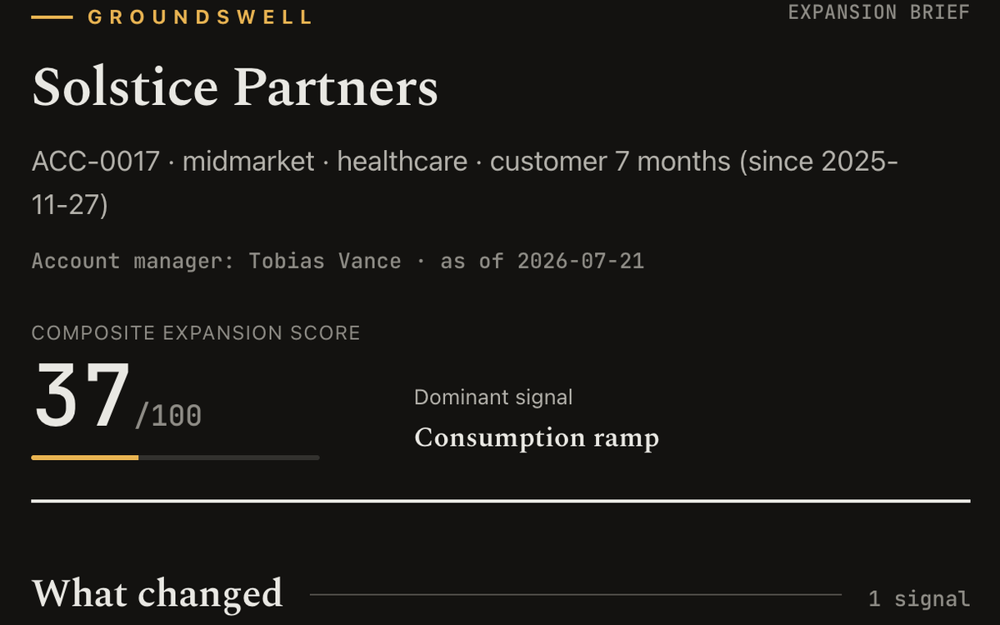
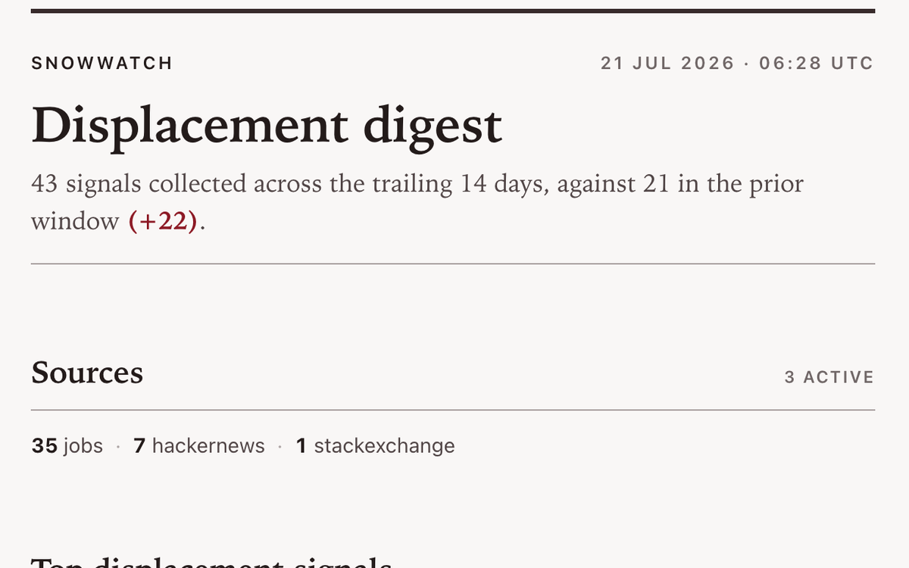
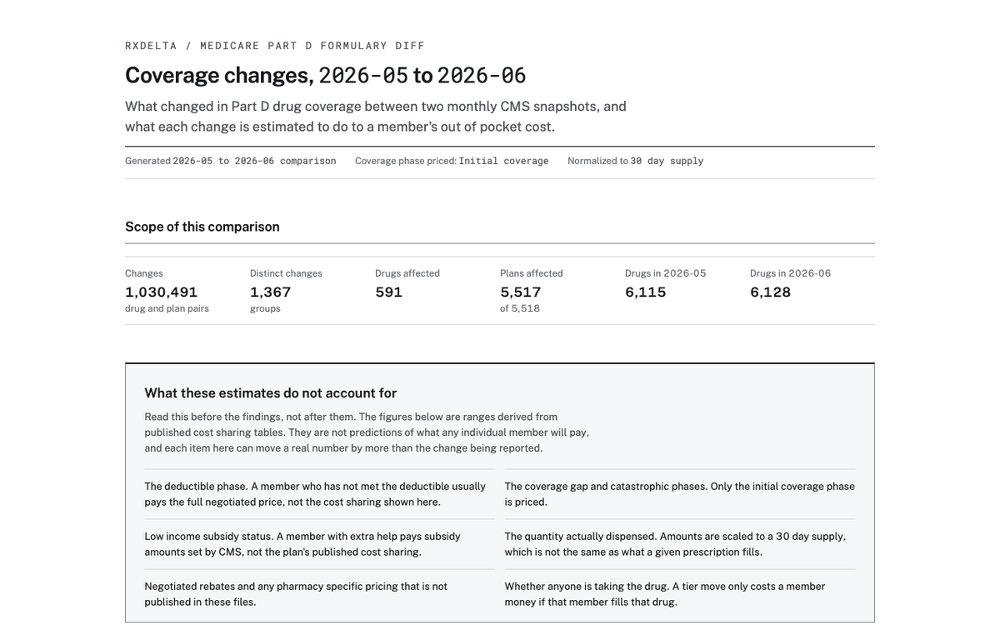
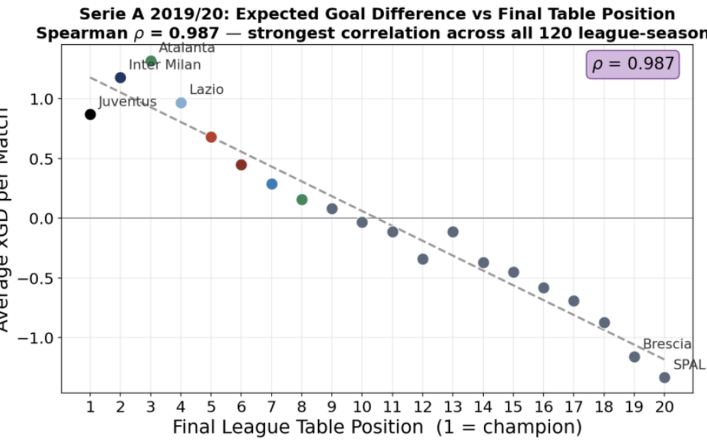
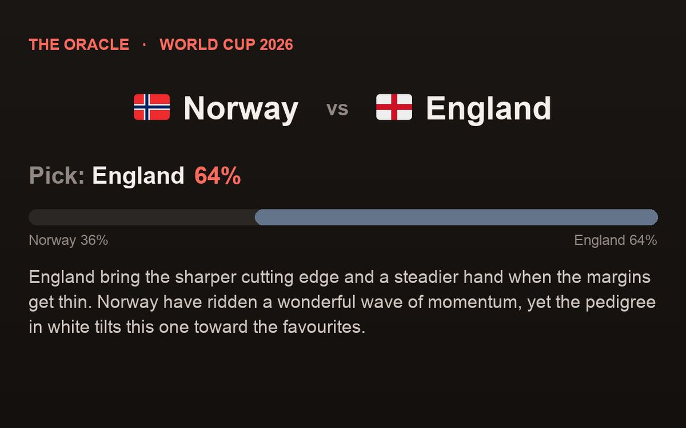
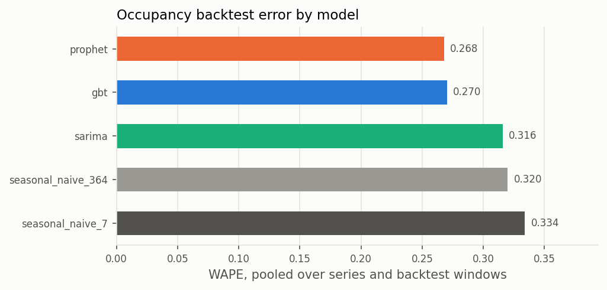

Three years of analytics work across hospitality revenue, pharmacy benefits, and financial services. I build demand forecasts and BI dashboards in Python and SQL that replace manual reporting and feed weekly pricing decisions. Underneath them sit the ETL jobs, reconciliation, and data quality checks that make the numbers safe to publish.
Demand forecasting, BI dashboards, ETL and data quality, and experimentation in Python and SQL.
I graduated from UC Irvine with a B.S. in Data Science and have three years of analytics work behind me: hospitality revenue at Choice Hotels, pharmacy benefits at Prime Therapeutics, and financial services at Bank of America.
The work itself is forecasting, ETL, and reporting. I build demand and volume forecasts in Python and SQL, write the ETL jobs and data quality checks that feed them, model the results as star schemas, and publish them as Power BI and Tableau dashboards that replace manual Excel rollups.
I also design experiments, from A/B tests on promotional campaigns to causal studies with matching and difference-in-differences. Whatever I ship comes with tests, documentation, and a stated tradeoff behind every threshold, and that standard carries into the projects below.
The languages, methods, and tooling behind the projects below.
Daily drivers for analysis and pipelines
Modeling and analysis libraries
ETL, warehouses, and data quality
Supervised models, evaluated honestly
Testing, forecasting, and causal methods
Dashboards and automated reporting
Requirements, stakeholders, and delivery
How the code gets shipped
Six end-to-end systems. Each card shows real output, and each repo ships with tests and documented tradeoffs.

AnalyticsAccount usage analytics and alerting over daily telemetry (compute, seats, workspaces, feature breadth) for a 60-account portfolio. Five rule-based detectors using window medians and weekday-matched baselines separate durable change from noise, feeding composite scoring and automated HTML briefs. Validated at 0.89 precision and 0.94 recall over 10 generated datasets and 600 accounts. 116 tests, green CI.

ETL + ScoringCompetitive-intelligence signal pipeline that ingests posts and job listings from three public APIs, deduplicates into SQLite, and applies direction-aware rules to surface platform-switching signals mapped to follow-up actions. False positives cut with a skills-list dampener, staffing-firm flags, score floors, and suppression notes. 150 tests, green CI.

CLI + ReportingMedicare Part D formulary change monitor. Loads two monthly CMS releases, roughly 1.1M formulary rows per month across 5,518 plans, into partitioned SQLite with a full audit trail, then classifies tier moves, prior authorization, step therapy, quantity limits, additions, and drops and ranks them by estimated member cost impact. Ships documented cost-impact ranges, mypy strict, ruff, a pytest coverage gate, and a self-contained HTML report.

Causal InferencePropensity Score Matching combined with Difference-in-Differences to estimate the causal effect of mid-season manager firings across 68,404 matches, the top 20 European leagues, and six seasons (2019/20 to 2024/25). Estimated +0.292 xGD per match over 12 matchweeks, 95% CI [0.192, 0.392], p < 0.001. Pipeline built on API-Football and Transfermarkt via Selenium into a 6-table SQLite database with 2,053 firings, validated with covariate balance, event-study pre-trends, and placebo tests.

PredictionWorld Cup 2026 prediction bot. A transparent Elo-style rating model computes win probabilities and passes only the computed numbers to an LLM for commentary, so the narration cannot invent scores or statistics. Renders shareable 1200x720 PNG cards with team flags, pick, probability split, and narration, plus offline fallbacks, cached assets, and a terminal card for local runs.

ForecastingDaily demand forecasting and price-band flagging for San Diego short-term rentals on public Inside Airbnb data. Turns 949,213 reviews across 13,213 listings into a demand index for 21 neighbourhood and room-type series, then backtests Prophet, SARIMA, and a global gradient boosted tree against weekly and yearly seasonal naive baselines over five rolling 90-day windows. Prophet and the tree beat both baselines in every window, with WAPE 19.7% and 19.1% below the weekly naive. A price model and quartile rule flag 1,280 listings as underpriced or overpriced, and everything exports to SQLite, charts, and a Power BI star schema.
Three years of analytics work across hospitality revenue, pharmacy benefits, and financial services.
Choice Hotels, Los Angeles, CA
Prime Therapeutics, Remote
Bank of America, New York, NY
The degree behind the projects, plus the certifications that back the BI work.
University of California, Irvine · June 2026
Microsoft
DataCamp
Thanks for reaching out.